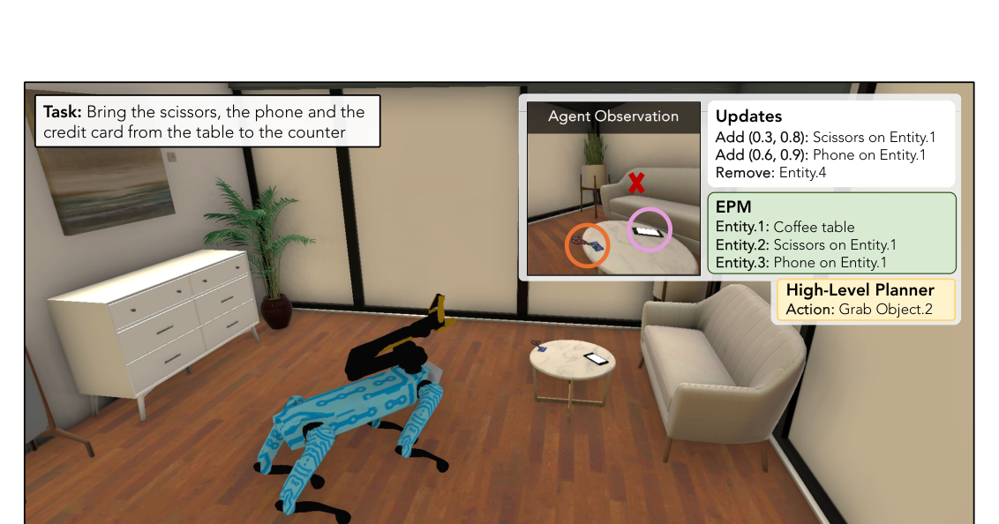
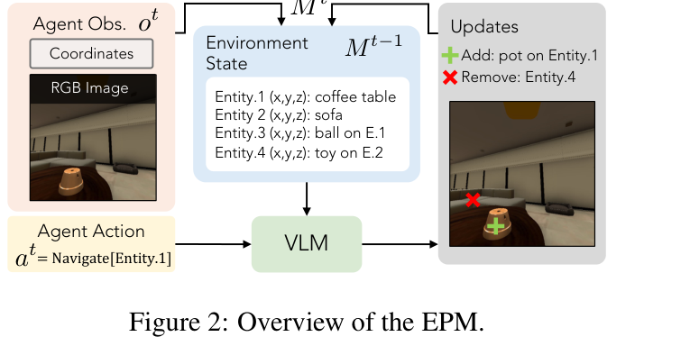
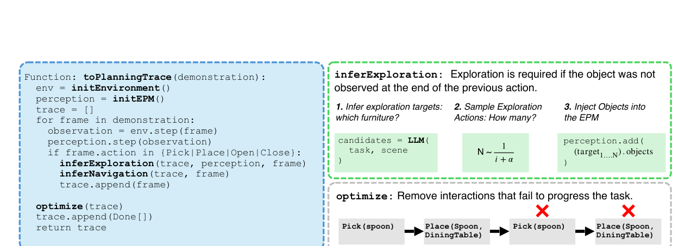
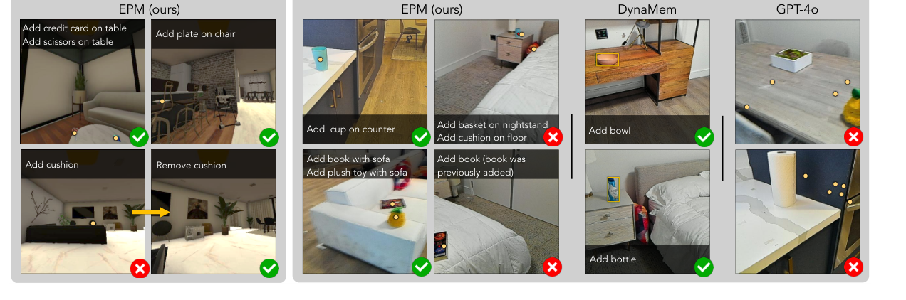

具身智能
可学习记忆
VLM / LLM 规划
强化学习（DDAFT）
ICLR 2026 · Meta FAIR
Planning with an Embodied Learnable Memory
EPM：用一个可学习的 VLM 记忆，支撑动态环境中的长时程移动操作规划
Priyam Parashar*, Jacob Krantz*, Matthew Chang*, Kavit Shah, Xavier Puig†, Roozbeh Mottaghi†（*共同一作，Meta FAIR）
一句话总结：现有具身记忆（点云特征、场景图、查询检索）难以应对"物体经常被移动"的动态环境、计算开销大、还依赖多模型拼接。本文提出 EPM（Embodied Perception Memory）：单个 VLM 从第一人称观测出发，通过 Add/Update/Remove 操作维护一份文本化环境表示，与 LLM 规划器无缝衔接；再用人类示范模仿 + 新颖的难度感知在线 RL（DDAFT）训练规划器——在 PARTNR 基准上比强基线成功率提升至多 55%，甚至超过配备了真值感知的基线。
01摘要解读
摘要从人类经验切入：人能毫不费力地走向"上次放干净马克杯的橱柜"，取杯到桌上准备咖啡——这依赖记忆、感知、规划三者的交织：记忆提供环境中物体的心智地图，随观察不断更新，进而支撑有效规划。机器人要达到这种效率，就需要同样的能力。现有记忆表示的三大短板：
- 难应对动态环境——物体频繁被机器人或人移动、改变状态；
- 计算缺陷——多模型拼接、反复调用大模型查询，内存与算力开销高；
- 查询接口不实用——朴素的语言特征匹配无法兼顾精度与召回，规划器难以写出精确查询。
EPM 的答案是单个可学习的 VLM：以自我中心视觉维护并更新文本环境表示；配合两种互补的规划器训练方法——人类轨迹模仿（自然探索与交互）与DDAFT（难度感知探索的在线 RL）。
+55%
PARTNR 规划任务成功率相对 DynaMem 的绝对提升
+12%
相对 PARTNR-Pretrained（LLama3.3-70B）的提升
8B < 70B
HD 训练的 8B 模型在 GT 感知下反超 70B 零样本规划器
02研究背景与动机（Introduction）
长时程移动操作需要什么样的记忆？
记忆不仅要捕获场景中物体的空间配置、上下文与状态，还要随智能体探索或环境变化而动态更新，并与规划系统集成、提供任务上下文。表 1 对比了各类记忆表示的能力边界：
| 方法 | 开放词汇 | 物体关系 | 纠错 | 动态性 | 免查询 | 单模型 |
|---|
| ConceptFusion (RSS'23) | ◐ | — | — | — | — | — |
| ConceptGraphs (ICRA'24) | ◐ | ✓ | — | — | — | — |
| 3D-Mem (CVPR'25) | ◐ | ✓ | — | — | — | — |
| DynaMem (arXiv'24) | ◐ | ✓ | — | ✓ | — | — |
| EPM（本文） | ✓ | ✓ | ✓ | ✓ | ✓ | ✓ |
现有路线的三类困境
- 存储自我观测/特征化点云 + 查询检索（DynaMem、3D-Mem 等）：动态场景难维护；规划时需要 LLM 先生成查询再生成动作——查询写不准，且特征匹配难以兼顾精度与召回（GOAT 工作的发现）；
- 多模型流水线（独立检测/分割 + 场景图 + LLM）：小物体/稀有物体场景有效，但内存与计算开销高，各模块误差在整个系统传播导致规划失败；
- VLM 直接从观测预测动作：动作直接落地到视觉，但受 VLM 上下文/记忆限制，无法支撑大环境中的长时程探索。
核心洞察：记忆直接产出"规划器可直接读的文本"
EPM 把环境编码为
物体中心的表示：每个物体 = 3D 坐标 + 自然语言描述（名称、状态、与其他实体的关系）。这天然是一份文本场景表示，LLM 规划器
直接读取上下文即可，无需发出检索查询——规划器只专注于生成动作。连锁好处：规划器可以在"没有查询标注"的机器人交互数据上训练，从而打开 RL 的大门。

图 1：EPM 系统总览。任务："把剪刀、手机和信用卡从桌子拿到柜台"。EPM（VLM）从智能体观测预测更新操作（Add 剪刀/手机到 Entity.1、Remove 误检的 Entity.4），维护文本环境状态（Entity.1: 咖啡桌，Entity.2: 剪刀在 E.1 上…）；高层规划器据此输出动作（Grab Object.2）。
论文贡献
- EPM：一种新的可学习记忆表示——单模型、原生处理动态环境、与 LLM 规划器无缝集成；
- 规划训练方法：人类示范数据 + DDAFT，在强基线上取得显著提升（相对 DynaMem +55%、相对 PP +12%）。
03方法 I：EPM 记忆本身
3.1 问题设定
目标：智能体在与环境交互时检测并跟踪场景中的物体。形式化：学习更新函数 f，使得
Mt = f ( Mt−1, ot, at )
- 环境状态 M：实体列表（家具与物体），每个实体 i 有唯一 idi、近似质心的 3D 坐标 ci∈ℝ³、自然语言描述 di（开放词汇名称、状态、与其他实体的关系）；
- 观测 ot：RGBD 图像 + 相机位姿 + 内参；
- 动作 a：元组 (u, idv1…idvn)，u 为动词（Navigate / Pick / Place / Open），v 索引环境状态中的实体。
3.2 四种离散记忆操作
关键设计：EPM 不重新生成整个 Mt，而是输出一组离散操作，与 Mt−1 组合得到 Mt：
- Add (<coords>): <description> — 把之前未见过的物体加入环境状态，坐标由像素坐标反投影到世界系；
- Update k (<coords>): <description> — 更新 id=k 的实体的坐标与描述（如橱柜被打开、物体被抓起），同时承担感知纠错（走近后修正之前标错的类别）；
- Remove k — 删除从场景消失或之前误检的实体；
- No updates — 没有新信息时维持 Mt=Mt−1。
训练一个 VLM 预测这些操作：输入 RGB 观测 + 文本环境状态 + 机器人动作 + 智能体位姿，输出一组更新操作。

图 2：EPM 概览。左：智能体观测（坐标 + RGB 图像）与动作（Navigate[Entity.1]）；中：当前文本环境状态；VLM 预测更新（Add: pot on Entity.1 / Remove: Entity.4）得到新的环境状态。
3.3 训练数据：仿真交互 + 特权启发式
在 PARTNR（要求探索与移动物体的室内仿真基准）上生成智能体交互数据：M⁰ 用仿真器提供的静态布局与家具初始化（论文也讨论了用 SfM/3D 重建等替代方案），然后用特权信息 + 启发式导出随时间更新记忆的操作序列——得到（观测、动作、环境状态、更新操作）数据集。以监督方式微调 LLaVa-OneVision-7B（LoRA）。注：启发式只用于生成训练数据，推理时不使用。
04方法 II：用 EPM 做规划（两种训练策略）
4.1 架构：两层控制
- 高层规划器：接收任务描述 ω，从 EPM 获取 Mt，输出高层动作（Navigate/Open/Pick/Place，以实体为参数）；
- 技能策略：把高层动作翻译为底层控制（本文用特权技能以聚焦感知与规划研究，框架对技能实现不可知）；技能执行至失败或终止时再次调用规划器；
- 规划器采用 ReAct 范式：提示词是 Mt 中物体（UID + 描述）拼接的文本，自回归的动作预测与世界表示交错；每步只把 EPM 更新过的物体加入上下文，避免上下文爆炸。
4.2 从人类示范学规划（HD）
具身规划在典型 LLM 训练数据中严重欠represented，高质量数据难求。作者的做法：把仿真中人类遥操作示范转换为机器人可用的规划轨迹。这里有个"感知-动作耦合"难题——不同感知系统的最优动作不同（"像素级完美"感知原地转一圈就能看清全屋，"近视"感知必须走动探索）。解法：在仿真中回放遥操作、同时让感知系统在环运行，从而无需感知专属示范就能得到感知专属的规划轨迹：

图 3：从人类示范生成规划轨迹。在仿真中回放人类示范、感知系统在环，推断出探索动作序列以适配感知系统并教会智能体探索；最后优化轨迹、删除无法推进任务的交互，缓解人类示范中的次优行为。
- 每个交互标签（Pick/Place/Open/Close）推出一个规划动作；若 EPM 在上一动作结束时尚未检测到交互对象，则插入 Explore 动作去找它；
- 教穷尽搜索：采样"没找到物体"的探索动作；教抗幻觉：探索中采样对幻觉物体的 Nav-Pick 动作；
- 优化：按 episode 评估函数删除无任务进展的交互序列，缓解人类示范的偶发次优；
- 用 LoRA 微调 LLM（LLama3.1-8B-Instruct）。
4.3 DDAFT：动态难度感知微调（核心创新）
用在线经验进一步改进规划：一种无价值函数的 LLM RL。与常见均匀采样训练指令不同，DDAFT 把采样空间偏向"困难"指令以提高样本效率——类似 DART-Math，但 DART-Math 生成静态数据集，DDAFT 迭代运行、用当前策略动态估计指令难度：
- 用初始规划策略（如 HD 模型）在所有训练 episode 上 rollout，得到带任务奖励的轨迹数据集 D₀ = {(x₀,r₀),…,(xₙ,rₙ)}；
- 在 Dt 上微调规划模型（本文用 RFT 目标），再采样新轨迹形成新数据集，交替进行；
- 难度感知采样：按各 episode 目前失败率的 softmax 分布采样"生成新轨迹的 episode"——探索集中于当前数据集中还没有成功样本的指令，形成课程，带来样本高效的政策改进。
DDAFT vs 相关方法
ReST/RFT/GRPO 类方法均匀采样指令；DART-Math 静态难度加权、一次性构造数据；
DDAFT 动态——每轮迭代用当前策略的失败率重新定义"难在哪"，训练资源持续流向"还不会的任务"，避免在已会任务上浪费 rollout。
05实验设置
平台与数据集
- 感知评估（离线）：① PARTNR 验证集生成的单智能体演示——12 个不同场景、1000 条演示，每隔 K 步记录环境状态真值；② Spot-Indoor（自建）：用 Boston Dynamics Spot 在 ~155 m² 公寓采集 30 条交互序列（15 人类 + 15 机器人）、1100 帧，目标与干扰物在容器间被移动，一半序列中人类也会改变环境；人工标注目标物体、首次出现帧与移动帧。
- 规划评估（在线）：PARTNR 单智能体基准，held-out 验证集 1000 episodes、12 个 HSSD 场景。
评估指标
- 感知：每步构建环境图 Ĝt（节点=实体，边=关系），与真值部分可观测图 Gt 做二分图匹配（名称匹配且距离 <0.5 m），报告节点/边的 Precision、Recall、F1（按时间平均）；
- 规划：遵循 PARTNR 协议——成功率（完成 episode 百分比）、完成度（平均任务进度，即使未完成）、仿真步数、规划周期数（高层动作数）、冗余动作率（无谓重排 / 总重排）。
对比方法
| 方法 | 说明 |
|---|
| GT（感知基线） | 特权版 EPM：真值传感器在距离/占屏比阈值内直接加物体——展示数据集难度上限 |
| GPT-4o | 同 EPM 流程但用 GPT-4o 产生更新操作 |
| DynaMem | 全局体素网格 + 物体特征，查询时特征匹配定位 + 目标检测器出 3D 位置（需对词表中每类物体逐帧查询；不能推断关系） |
| PP（PARTNR-Pretrained） | LLama3.3-70B-Instruct + EPM 表示 + ReAct 提示，零样本微调 |
| HD（本文） | LLama3.1-8B-Instruct + 人类示范轨迹微调（PARTNR Train 10 万任务） |
| PP+DDAFT / HD+DDAFT（本文） | 在 PP / HD 基础上跑 5 轮 DDAFT（2000 episode 子集，每轮 2000 episodes） |
06实验结果与分析
6.1 感知评估（规划之外）

图 4：感知定性结果。左：PARTNR 离线评估中 EPM 的物体添加（上）与误检删除（下）示例；右：真实世界（Spot-Indoor）中 EPM vs DynaMem vs GPT-4o 的定位结果（橙点与包围框为各方法定位的物体）。
| 方法 | 数据集 | 节点 P | 节点 R | 节点 F1 | 边 P | 边 R | 边 F1 |
|---|
| GT（上限参考） | PARTNR | 0.86 | 0.54 | 0.60 | 0.83 | 0.54 | 0.63 |
| GPT-4o | PARTNR | 0.00 | 0.05 | 0.00 | 0.00 | 0.00 | 0.00 |
| DynaMem | PARTNR | 0.04 | 0.10 | 0.05 | —（不支持关系） |
| EPM | PARTNR | 0.36 | 0.42 | 0.34 | 0.66 | 0.38 | 0.46 |
| DynaMem | Spot-Indoor | 0.42 | 0.73 | 0.51 | — |
| EPM | Spot-Indoor | 0.30 | 0.33 | 0.24 | 0.28 | 0.12 | 0.16 |
- 仿真中显著领先：EPM F1-node 0.34，但远未饱和——数据集本身很难（物体常部分可见或远距离观察，GT 上限也只有 0.60）；
- 真机可迁移：只用仿真数据训练的记忆操作，在真实世界能定位物体与关系，但常错误分类、难以区分同物体多实例；
- DynaMem 真机数字更高，但代价大：需要对词表中每个物体类别逐帧查询检测器——大词表下不可行，且无法推断关系；后续规划实验表明这些局限导致规划性能与效率大幅落后；
- GPT-4o 幻觉严重：倾向编造物体与标签，节点精度近乎为 0。
6.2 规划评估（PARTNR，主结果）
| # | 方法 | 感知 | 成功率↔ | 完成度↔ | 仿真步数↗ | 规划周期↗ | 冗余动作↗ |
|---|
| 1 | DynaMem | GT | 0.17 | 0.33 | 7611 | — | — |
| 2 | PP（70B 零样本） | GT | 0.51 | 0.67 | 1570 | 17.6 | 0.19 |
| 3 | PP+DDAFT（本文） | GT | 0.66 | 0.78 | 2160 | 22.3 | 0.19 |
| 4 | HD（本文） | GT | 0.63 | 0.74 | 2110 | 21.6 | 0.17 |
| 5 | HD+DDAFT（本文） | GT | 0.68 | 0.80 | 2550 | 22.7 | 0.15 |
| 6 | DynaMem | DynaMem | 0.03 | 0.11 | 5090 | — | — |
| 7 | PP（70B 零样本） | Learned | 0.46 | 0.65 | 1850 | 19.7 | 0.28 |
| 8 | PP+DDAFT（本文） | Learned | 0.58 | 0.74 | 2200 | 23.2 | 0.27 |
| 9 | HD（本文） | Learned | 0.55 | 0.69 | 3040 | 30.2 | 0.17 |
| 10 | HD+DDAFT（本文） | Learned | 0.58 | 0.74 | 2250 | 23.6 | 0.23 |
四个关键发现
- HD 用小模型有效规划：GT 感知下 HD（8B）成功率 0.63 反超 PP（70B）0.51——示范轨迹蒸馏是学习具身规划的有效途径；
- HD 能适配 EPM 的失败：学习感知下 HD（0.55）反超 PP 零样本（0.46），甚至反超 PP 配真值感知（0.51）——无需采集感知专属示范，示范本身就教会了在噪声记忆上的鲁棒规划；
- DDAFT 全面有效：GT 感知下 PP +0.15、HD +0.05；学习感知下 PP +0.12、HD +0.03——对任何基于 EPM 的文本规划策略都是通用配方；
- 整体大幅超越基线：HD+DDAFT（学习感知）相对 DynaMem +55%、相对 PP +12%；即便给 DynaMem 配真值感知（row 1），仍远逊于本文——检索-检测式方法处理不好"特定实例 / 全部叉子 / 办公室的桌子"这类指代。本文方法比 DynaMem 快 3.5×。
6.3 真实世界评估（Spot 机器人）
用 PP+DDAFT 规划器 + 学习版 EPM 在室内环境、Spot 机器人上测试 20 个场景（有杂乱时把物体移到指定位置，语言指令驱动）：任务成功率 55%（失败来自规划与技能执行两方面）；70% 的任务中 EPM 成功给出正确规划所需信息。这验证了仿真-only 训练的记忆 + 规划系统在真实世界的可用性。
07核心 Insights
1. "文本化记忆 + 免查询接口"是 LLM 规划器的天然输入
把记忆设计成规划器上下文的直接一部分（实体 = 3D 坐标 + 语言描述），省去了查询生成、特征匹配、多次大模型调用。这不仅更快（3.5×），还打开了用
无查询标注的交互/示范数据训练规划器的大门——这是 DDAFT 得以存在的前提。
2. 感知在环的示范回放，解决了"感知-动作耦合"难题
不同感知系统对应不同最优动作。与其重新采集感知专属示范，不如
回放人类示范 + 让感知系统在环，自动合成与自身感知缺陷（幻觉、漏检）匹配的探索与纠错行为——还顺带教会了穷尽搜索和抗幻觉。
3. 难度采样应该"动态"而非"静态"
DDAFT 的收益来自用当前策略的失败率持续重定义困难指令，把 rollout 预算集中到"还没有成功样本"的任务上。在 GT 感知下给零样本 70B 模型带来 +0.15 成功率——对一个已经很强的基线是很大的边际增益。
4. 训练过的 8B > 零样本 70B，且能"补偿"感知噪声
HD 不仅以小胜大，还在学习感知（噪声记忆）下反超了零样本模型配真值感知的组合——
在噪声记忆上规划本身是一项可学习的技能，示范数据里注入的幻觉/失败样本就是这门课的教材。
5. 检索-检测式记忆的结构性缺陷
DynaMem 在感知指标上（真机）甚至更高，但规划上惨败——因为任务常需要
特定实例、多实例计数、关系指代（"全部叉子""办公室的桌子"），"先检索后检测"无法处理。这提示：记忆评估不能只看感知指标，要看它在闭环规划中的端到端价值。
08局限、结论与链接
局限（作者自述）
- 训练仅用仿真数据——大规模真实动态场景 + 详细规划动作的数据集难以收集，留作未来工作；
- 纯文本表示可能限制某些任务的规划（文本无法表示的物体性质，规划器无从推理）；EPM 框架足够通用，可扩展加入视觉连续特征；未来可与直接操作当前观测的 visuomotor / VLA 模块组成混合系统；
- 真机验证规模尚小（20 个场景），且代码截至阅读时尚未正式公开。
结论
EPM 证明了可学习的显式世界记忆可以与 LLM 规划器无缝集成：从一般人类示范中就能提取规划训练信号，新提出的 DDAFT 在所有设置下改进规划性能；所提方法甚至在基线配备真值感知时仍然胜出——为长时程移动操作的"记忆-感知-规划"闭环提供了一个简洁、可学习、可扩展的方案。
论文与代码链接